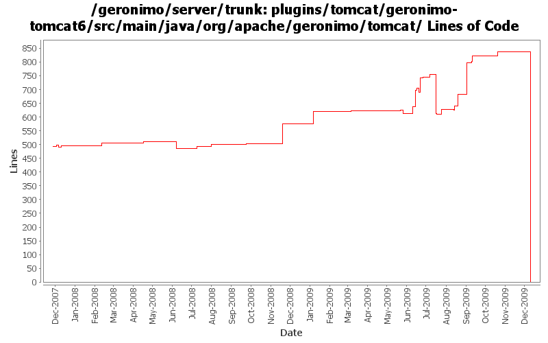

[root]/plugins/tomcat/geronimo-tomcat6/src/main/java/org/apache/geronimo/tomcat
 cluster
(0 files, 0 lines)
cluster
(0 files, 0 lines)
 connector
(0 files, 0 lines)
connector
(0 files, 0 lines)
 interceptor
(0 files, 0 lines)
interceptor
(0 files, 0 lines)
 listener
(0 files, 0 lines)
listener
(0 files, 0 lines)
 model
(0 files, 0 lines)
model
(0 files, 0 lines)
 realm
(0 files, 0 lines)
realm
(0 files, 0 lines)
 security
(0 files, 0 lines)
security
(0 files, 0 lines)
 authentication
(0 files, 0 lines)
authentication
(0 files, 0 lines)
 jaspic
(0 files, 0 lines)
jaspic
(0 files, 0 lines)
 impl
(0 files, 0 lines)
impl
(0 files, 0 lines)
 jacc
(0 files, 0 lines)
jacc
(0 files, 0 lines)
 stats
(0 files, 0 lines)
stats
(0 files, 0 lines)
 util
(0 files, 0 lines)
util
(0 files, 0 lines)

| Author | Changes | Lines of Code | Lines per Change |
|---|---|---|---|
| Totals | 152 (100.0%) | 1421 (100.0%) | 9.3 |
| djencks | 43 (28.3%) | 557 (39.2%) | 12.9 |
| xuhaihong | 36 (23.7%) | 259 (18.2%) | 7.1 |
| genspring | 10 (6.6%) | 221 (15.6%) | 22.1 |
| gawor | 14 (9.2%) | 145 (10.2%) | 10.3 |
| rickmcguire | 2 (1.3%) | 92 (6.5%) | 46.0 |
| dwoods | 2 (1.3%) | 87 (6.1%) | 43.5 |
| jdillon | 29 (19.1%) | 25 (1.8%) | 0.8 |
| vamsic007 | 8 (5.3%) | 13 (0.9%) | 1.6 |
| linsun | 1 (0.7%) | 10 (0.7%) | 10.0 |
| kevan | 2 (1.3%) | 7 (0.5%) | 3.5 |
| gdamour | 5 (3.3%) | 5 (0.4%) | 1.0 |
GERONIMO-4980 Use Tomcat 7 in Geronimo 3.0
0 lines of code changed in 23 files:
use latest geronimo tomcat
2 lines of code changed in 1 file:
Commit tomcat plugin changes so far
92 lines of code changed in 2 files:
GERONIMO-4882 some doc update in G22 might be caused by bugs in code.
1 lines of code changed in 1 file:
GERONIMO-4798 can't start server because of an error of Http11AprProtocol
1 lines of code changed in 1 file:
GERONIMO-4851 Server will get into abnormal status when trying to edit/delete Tomcat Connector HTTPS BIO network listener
22 lines of code changed in 2 files:
GERONIMO-4856 Some abnormal conditions with Tomcat NIO HTTPS Connector
2 lines of code changed in 1 file:
GERONIMO-4858 Geronimo 2.2 doesn't add correct connector attributes to server.xml, patch from Siqi.
4 lines of code changed in 1 file:
GERONIMO-4742 Connector portlets for Tomcat does not work
1, Added ConnectorWrapperGBeanStarter.java to start connector GBeans for connectors defined in server.xml.
2, Added TomcatServerConfigManager.java to use DOM to read/write connectors from server.xml.
3, Modified other classes to make this happen.
192 lines of code changed in 5 files:
GERONIMO-4803 ClassCastExeption after disabling access log valve for web container
75 lines of code changed in 2 files:
GERONIMO-4659 Include web app "Display Name" in console web app portlet (Patch from Victor Fang)
15 lines of code changed in 1 file:
GERONIMO-4645 use jacc ejb ws auth for jetty6, simplify SOAPHandler interface
1 lines of code changed in 1 file:
install jacc security valve before ejb ws valve and use ejb authorizer. should fix some problems in tck or at least move things in the right direction
21 lines of code changed in 3 files:
GERONIMO-4752 fix tck problems in jaspic integration
3 lines of code changed in 1 file:
GERONIMO-4748 Make sure default subject is set on the thread if there is any security configuration at all
5 lines of code changed in 2 files:
GERONIMO-4748 simplify default subject handling which should remove the possibility of the problem in the defect
19 lines of code changed in 2 files:
GERONIMO-4752 rewrite toomcat security to support jaspic and better support jacc
198 lines of code changed in 10 files:
GERONIMO-4645 Make ejb ws security more jacc friendly, implement transport guarantees for jetty7 using jacc. See jira for more comments
2 lines of code changed in 1 file:
prefer openejb-jar.xml instead of geronimo-openejb.xml descriptor in ejb ws deployer and pass additional properties object to SoapHandlers
11 lines of code changed in 1 file:
GERONIMO-4715 Get tomcat to use our thread pools
7 lines of code changed in 2 files:
Fix the Tomcat configuration about realm and valve
2 lines of code changed in 1 file:
GERONIMO-4684 Recover the AccessLogValve and LogManager, those two GBeans are needed by console
102 lines of code changed in 4 files:
GERONIMO-4684 Do property substitution and calculations in the tomcat server.xml
22 lines of code changed in 1 file:
GERONIMO-4684 Provide a way for the existing EngineGBean to wrap the engine started from a server.xml. This should provide backward compatibility for added gbeans in user plans
30 lines of code changed in 3 files:
GERONIMO-4684 Configure tomcat server using server.xml
28 lines of code changed in 2 files:
GERONIMO-4684, GERONIMO-4685 Use our tomcat build, configure tomcat using server.xml. Also includes some spec jar updates including using our jaxb spec jar
201 lines of code changed in 3 files:
GERONIMO-3389 java.lang.UnsatisfiedLinkError is thrown when create a Tomcat APR HTTP Connector (Patch from Shawn Jiang)
27 lines of code changed in 1 file:
GERONIMO-4553 Make web use of security realms depend on plugin visibility; make console expose the 'global' attribute for configuration (renamed from 'publish'). Also merges in geronimo-security changes from sandbox branches.
34 lines of code changed in 9 files:
GERONIMO-4545 TomcatJAASRealm keeps reference to undeployed EAR/WAR's classloader
9 lines of code changed in 1 file:
expose HttpServletRequest through jacc for ejb web services (GERONIMO-4572)
2 lines of code changed in 1 file:
support for specifying a list of http methods that should be secured for ejb-based web services (GERONIMO-4015)
78 lines of code changed in 3 files:
GERONIMO-3838 Close potential denial of service attack vector in Tomcat session handling, which can be exploited by accessing the Admin Console login page but never logging in. Thanks to Ivan for the patch.
79 lines of code changed in 1 file:
GERONIMO-4258 clean up some naming constant usage
9 lines of code changed in 5 files:
read log file line by line instead of loading the entire file into memory (GERONIMO-4224)
24 lines of code changed in 1 file:
give users a better message when context-root is not unique - GERONIMO-4191
10 lines of code changed in 1 file:
GERONIMO-4113 Merge from branches/2.1. Use appropriate classloader when loading valve class
6 lines of code changed in 1 file:
GERONIMO-4109 reverse host-engine relationship direction for non-default hosts
26 lines of code changed in 3 files:
More loggers back to static
11 lines of code changed in 11 files:
(GERONIMO-3985) Use SLF4J as the primary logging facade for Geronimo
14 lines of code changed in 18 files:
GERONIMO-3900 Add runtime support for non-Sun JVMs. Merged in updates from 2.1.1 branch.
8 lines of code changed in 1 file:
(9 more)